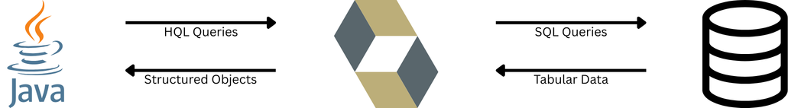
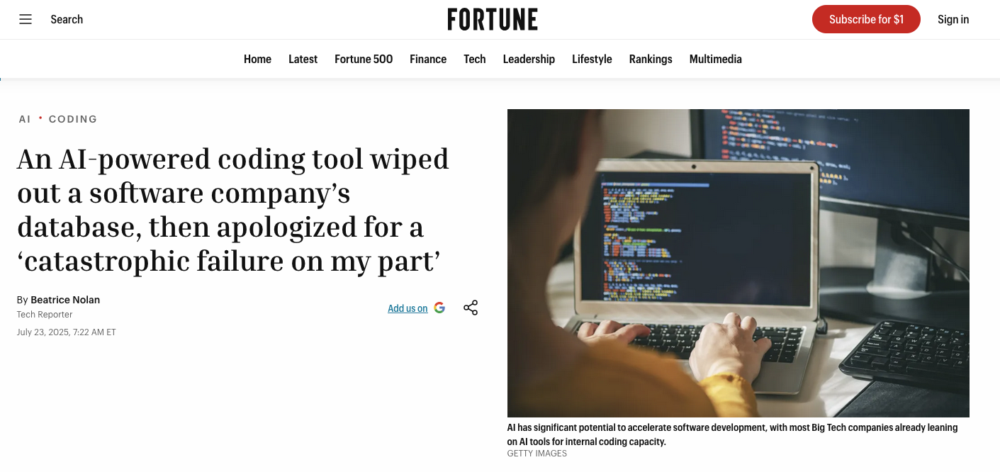
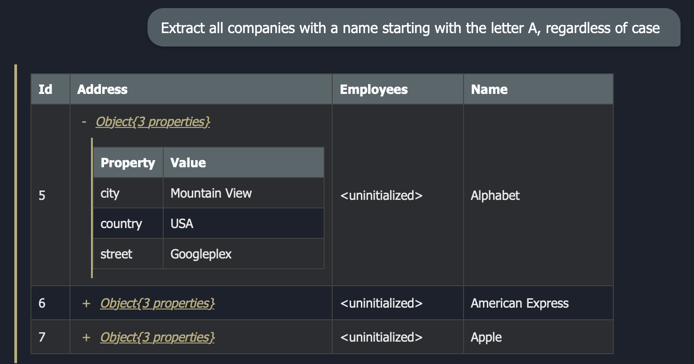
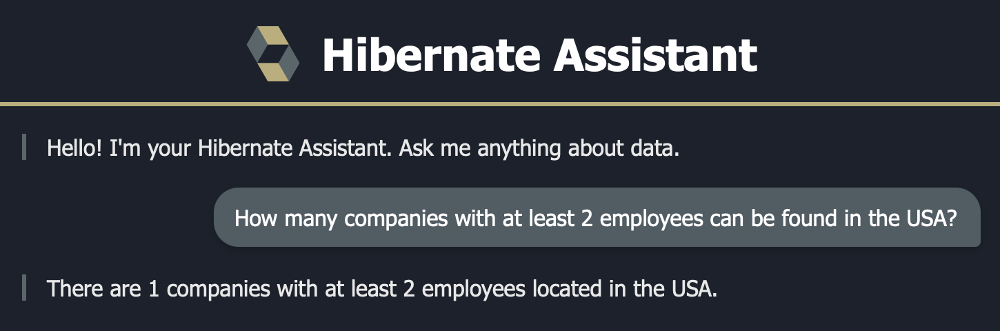
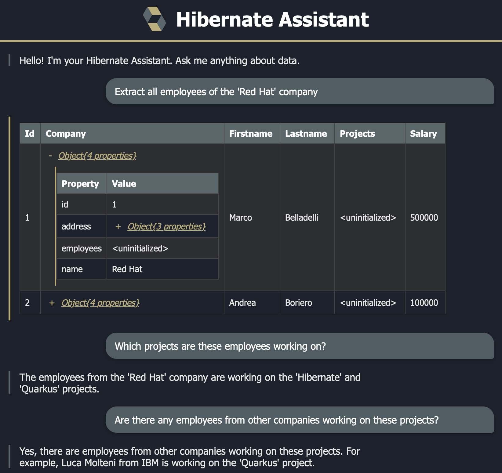
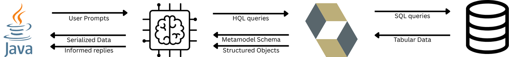

Talk to Your Data
Natural Language Data Access in Java with
Hibernate • Quarkus • LangChain4j
Marco Belladelli - Software Developer @ IBM
About Me
Marco Belladelli
- Software Developer @ IBM
- Hibernate team, ORM maintainer
- Contributor to Quarkus and LangChain4j
- github.com/mbellade
Introduction & Context
The Java Data Stack
Hibernate ORM
The bridge between Java objects and relational databases.
Quarkus
Java runtime with fast startup, live reload, and a rich extension ecosystem.
LangChain4j
The emerging standard for LLM integration in Java - unified API for AI model orchestration.
The Traditional Data Flow
How Java apps access data today:

- Developer writes HQL or JPQL queries
- Hibernate translates to SQL, maps results to Java objects
- Works great... but requires knowing the query language and the domain model
LLMs Don't Know Your Data
LLMs are powerful, but they lack context:
- Trained on vast public data - they know HQL syntax
- They do NOT know:
- Your entity model
- Your table structure
- Your business relationships
- Your data
The gap: How do we give an LLM the context it needs
to write queries against your database?
The Hibernate Assistant
Introducing hibernate-assistant
A new module in Hibernate ORM that acts as a bridge between your mapped domain model and LLMs.
1. Metamodel Serialization
Describes your entire entity model (entities, attributes, relationships) in a JSON format consumable by LLMs
Describes your entire entity model (entities, attributes, relationships) in a JSON format consumable by LLMs
2. Results Serialization
Transforms complex ORM query results (objects, collections, embeddables, associations) into LLM-friendly text
Transforms complex ORM query results (objects, collections, embeddables, associations) into LLM-friendly text

Why Hibernate?
| Advantage | Description |
|---|---|
| Constrained Access | LLMs can only access mapped entities and their fields - no arbitrary table access, and can be restricted to read-only queries |
| Fail-Early Validation | Invalid HQL is caught before it reaches the database |
| Self-Correction | Hibernate's clear error messages can be fed back to the LLM to fix mistakes |
| Portability | One query language (HQL) works across all supported databases |
| Handling Complexity | HQL is closer to natural language - associations, embeddables, inheritance are simpler |
Building the Assistant
Live Demo
Live Coding
The System Prompt
Metamodel Serialization
- Use
MetamodelJsonSerializerto describe the entire entity model as JSON - Inject it into a
SystemMessageto instruct the LLM
The LLM now knows your domain model as well as you do.
Live Coding
Generating HQL from Natural Language
- Send the user's natural language request to the LLM via
ChatModel - The LLM generates a valid HQL query based on the metamodel context
- Extract the HQL from the structured response
"Extract all companies with a name starting with A"
SELECT c FROM Company c WHERE LOWER(c.name) LIKE 'a%'
Live Coding
Executing & Serializing Results
- Execute the generated HQL via Hibernate's
SS - Serialize results to JSON with
ResultsJsonSerializer - Handles embedded types, associations, collections

RAG Pipeline
Live Demo
Retrieval-Augmented Generation
- Enrich the LLM's responses with real information from your database
- Retrieve relevant data first, then let the LLM reason about it
- The LLM can now provide informed, contextual answers grounded in your actual data
The LLM doesn't know your data - but with RAG, we can feed it the right
information at the right time, so its responses reflect what's actually in your database.
Live Coding
Implementing RAG
- Implement LangChain4j's
ContentRetrieverinterface - Use our assistant to generate HQL, execute queries, and serialize results
- Wire it into a
RetrievalAugmentorwith a prompt template that constrains the LLM to answer based strictly on the retrieved data
This is where Hibernate meets RAG - the content retriever uses
our assistant to fetch data, then feeds it into the LangChain4j pipeline.
Live Demo
RAG in Action
Ask: "How many companies with at least 2 employees
can be found in the USA?"
SELECT COUNT(c) FROM Company c
WHERE c.address.country = 'USA'
AND SIZE(c.employees) >= 2

Chatbot & MCP Server
Live Demo
Live Demo
The Chatbot UI

Model Context Protocol (MCP)
- Open standard for connecting AI models with tools and data providers
- Acts like a universal adapter for AI agents
- Your Hibernate Assistant becomes a data tool that any AI agent can discover and use
Think of it as a USB port for AI - any compatible agent can plug in
and access your data.
Live Coding
MCP Server Implementation
- Annotate methods with
@Toolfrom the Quarkus MCP Server extension - Expose tools like
hibernate_get_metamodelandhibernate_query - Reuse the same assistant logic we already built
Two annotations and your database is available to any MCP-compatible agent.
Live Demo
MCP in Action
- Connect an external AI agent to the MCP server
- The agent discovers the Hibernate tools automatically
- Ask the agent a question about your data
- Watch it invoke
hibernate_queryautonomously
Your Java application is now part of the AI ecosystem -
any MCP-compatible agent can query your database.
Wrap-up
The Full Picture

- User asks a question in plain English
- LLM generates HQL using metamodel context
- Hibernate executes the query, serializes results
- Results fed back to LLM for a conversational answer
Key Takeaways
- Hibernate already knows your domain: the Assistant module simply exposes that knowledge to LLMs
- HQL over SQL: type safety, constrained access, fail-early validation, better portability
- RAG with real data: ground LLM responses in your actual database, reducing hallucinations
- MCP makes it extensible: expose your data to any AI agent in the ecosystem
- Minimal code: a few classes, a few annotations, and your data speaks natural language
Getting Started
Try it yourself:
hibernate-assistantmodule - available since ORM 7.3- Quarkus LangChain4j:
quarkus-langchain4j-* - Quarkus MCP Server:
quarkus-mcp-server-*
Resources:
- Hibernate ORM: hibernate.org/orm
- Quarkus: quarkus.io
- LangChain4j: docs.langchain4j.dev
- Demo source code: github.com/mbellade/demos
Thank You!
Talk to Your Data
Questions?
Marco Belladelli • github.com/mbellade